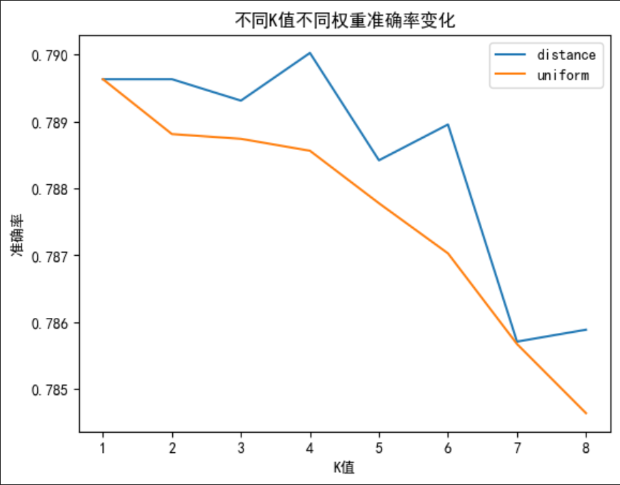
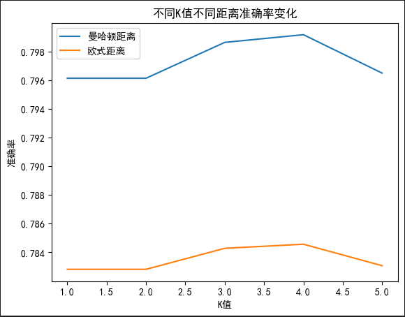

1 简介
1.1 背景简介
图像的智能处理一直是人工智能领域广受关注的一类技术，在人工智能落地的进程中发挥着重要作用。其中车牌号识别作为一个早期应用场景，已经融入日常生活中，为我们提供了诸多便利，在各地的停车场和出入口都能看到它的身影。车牌号识别往往分为字符划分和字符识别两个子任务，本案例我们将关注字符识别的任务。
在原任务的基础上：
对method1和method2图像增强方式进行了更改，其中method1改为了使用cv2来进行图像增强，且增强方式均为叠加增强；
增加了对不同增强方式的效果对比，即：未使用增强方式、使用cv2增强和使用PIL增强。
所有可运行的代码，在我的仓库中，https://github.com/Guoxn1/ai。按照博客中文章的分类，可找到代码所在分支。
如果给到您帮助，请给我的仓库个star，这将助推我持续创作。
1.2 数据简介
数据存放在同文件夹的data目录下。下面还有两个子文件夹train和test，分别对应train和test训练集。其中下面还有很多子文件夹，代表里面存储各种数据，比如：/data/train/0下面存储0。
标签就是各个文件的名字。
1.3 任务简介
基础任务（80分）：
数据预处理任务：将图片数据读入，标准化，将每个图像表示为一维向量，同时保留其对应的标签。这是进行模型训练之前的重要步骤。
模型训练任务：使用
sklearn库的KNeighborsClassifier类，构建K-NN模型，并对训练集进行训练。
模型评估任务：使用模型对测试集进行预测，然后计算模型的准确率。可以使用
sklearn库的accuracy_score函数来实现。
参数分析任务：探究当K值变化时，模型在测试集上的准确率如何变化。可以绘制一个图表，显示不同K值对应的准确率。
数据集大小影响任务：分析当训练集大小变化时，测试结果如何变化。可以尝试不同大小的训练集，记录并分析结果。
扩展任务（20分）：
距离度量分析任务：分析在K-NN中使用不同的距离度量方式（如欧氏距离、曼哈顿距离等）对模型效果的影响。
方法对比任务：对比平权K-NN与加权K-NN的预测效果，分析不同权重设置对结果的影响。平权K-NN认为所有邻居的投票权重相同，而加权K-NN则根据距离远近来确定权重，更近的邻居有更大的投票权。
数据增强任务：考虑到车牌字符可能在不同的光照、角度和大小下出现，可以尝试进行数据增强，如旋转、缩放、剪切等操作，以提高模型的泛化能力。
数据均衡任务：如果数据集中的各类别样本数量不平衡，可能会对K-NN的性能产生影响。可以尝试使用过采样或者欠采样的方法，来使得各类别样本数量均衡。
2 预处理操作
2.1 图像增强操作
有些图像的展示效果好，有的图像展示效果差，这是必然的。所以我们是否可以通过图像增强，比如：二值化、顶帽操作、均衡等，使得轮廓更加清晰。可以采用cv2，直接使用其中的增强函数；也可以使用PIL库中的一些函数，对图像的亮度等进行增强。
先预定义一些函数，分别对应三种操作：
1 2 3 4 5 6 7 8 9 10 11 12 13 14 15 16 17 18 19 20 21 22 23 24 25 26 27 28 29 30 31 32 33 def indentify_method1 (root_path ):open (root_path)return imagedef cv2_method2 (root_path ):3 ,3 ))1 )10 , 255 , cv2.THRESH_BINARY_INV)[1 ]2.0 ,tileGridSize=(4 ,4 ))return resdef PIL_method3 (root_path ):open (root_path)1.5 1.5 return image_colered
2.2 图片转向量
图片是没办法直接应用到数据中处理的，必须要进行一定的转换。常见的就是二维矩阵或一维矩阵。为了计算的方便性，我们采用将图像数据转化为一维数据，当然这将损失一定的列关联性。数据统一给的是20*20的向量，所以我们需要创建一个400维的向量作为存储。
1 2 3 4 5 6 7 def image_vector (image ):400 )for i in range (20 ):for j in range (20 ):20 *i+j] = image[i][j]return vector
执行加载数据的操作：
1 2 3 4 5 6 7 8 9 10 11 12 13 14 15 16 17 18 19 20 21 22 23 24 25 26 27 28 29 30 31 32 33 34 35 36 37 38 39 40 41 42 43 44 45 46 47 48 import osdef load_data (path,method ):0 )for i in range (len (labels_path_list)):for image_path in image_path_list:if method == 1 :int (labels_path_list[i]))elif method ==2 :int (labels_path_list[i]))else :int (labels_path_list[i]))print (image_vector_list.shape)print (image_label_list.shape)return image_vector_list,image_label_listr'data\train' ,method=1 )r'data\test' ,method=1 )r'data\train' ,method=2 )r'data\test' ,method=2 )r'data\train' ,method=3 )r'data\test' ,method=3 )
2.3 标准化处理
1 2 3 4 5 6 7 8 9 10 11 12 13 14 from sklearn.preprocessing import StandardScaler
3 数据处理
3.1 确定最佳参数
一般采用交叉验证法。
1 2 3 4 5 6 7 8 9 10 11 12 13 14 15 from sklearn.discriminant_analysis import LinearDiscriminantAnalysis from sklearn.model_selection import cross_val_score,train_test_split,GridSearchCVfrom sklearn.neighbors import KNeighborsClassifier,KNeighborsRegressor "n_neighbors" :[1 ,2 ,3 ,4 ,5 ,6 ,7 ,8 ,9 ],"weights" :['uniform' ,'distance' ],"p" :[1 ,2 ]5 ,scoring="accuracy" ,verbose=100 ,n_jobs=1 )print (grid_search.best_score_,grid_search.best_params_)
{'n_neighbors': 2, 'p': 1, 'weights': 'distance'}
3.2 比较三种增强操作的效果
1 2 3 4 5 6 7 8 from sklearn.metrics import accuracy_score2 ,weights='distance' ,p=1 )print (acc)
1 2 3 4 5 6 from sklearn.metrics import accuracy_score2 ,weights='distance' ,p=1 )print (acc)
1 2 3 4 5 6 from sklearn.metrics import accuracy_score2 ,weights='distance' ,p=1 )print (acc)
分别对应不增强，cv增强和pil增强，输出为0.71、 0.75、 0.74。
可见对图像进行增强后，识别准确率提高，并且cv提升比pil提升要好。
3.3 过采样改善数据
这样的准确率是否还能提高呢，其实还可以考虑过采样，过采样就是把数据类型较少的数据多复制几份，添加到算法中进行拟合，原理就是增加这部分数据的权重。
下面就接着上面最好的经过cv增强后的来进行操作了，但是发现效果不理想，采用了PIL增强后的图像，效果明显。
1 2 3 4 5 6 7 8 9 10 11 12 13 14 from imblearn.over_sampling import SMOTE 2 ) print ("SMOTE之后图片向量的维度:" ,X_train_smote.shape , "SMOTE之后标签值的维度:" ,y_train_smote.shape)print ("SMOTE之后图片向量的维度:" ,X_test_smote.shape , "SMOTE之后标签值的维度:" ,y_test_smote.shape)2 ,weights='distance' ,p=1 )print (acc)
0.80
4 可视化分析
接下来画一些可视化的图，用来展示不同参数对准确率的影响。通常来说两个自变量的前提下，使用折线图。
先定义一个画折线图的函数。
1 2 3 4 5 6 7 def draw (x,y,xlabel,ylabel,title ):
4.1 不同K值不同权重准确率变化
1 2 3 4 5 6 7 8 9 10 11 12 13 14 15 title='不同K值不同权重准确率变化' 'K值' '准确率' "distance" ,"uniform" ]1 ,2 ,3 ,4 ,5 ,6 ,7 ,8 ]for weight in weights:for nei in neis :

4.2 不同K值不同距离准确率变化
1 2 3 4 5 6 7 8 9 10 11 12 13 14 15 16 17 title='不同K值不同距离准确率变化' 'K值' '准确率' "distance" 1 ,2 ,3 ,4 ,5 ]1 ,2 ]'曼哈顿距离' ,'欧式距离' ]for p in ps:for nei in neis :1 ],xlabel,ylabel,title)

image-20231017155720229
如果这篇博客给到您帮助，我希望您能给我的仓库点一个star，这将是我继续创作下去的动力。
我的仓库地址，https://github.com/Guoxn1?tab=repositories
like